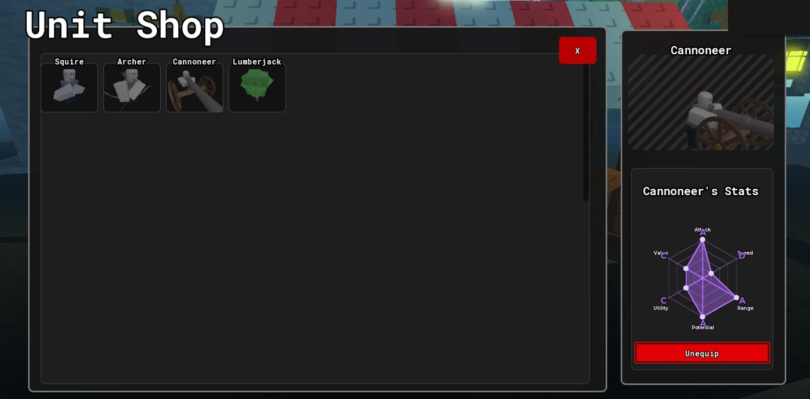
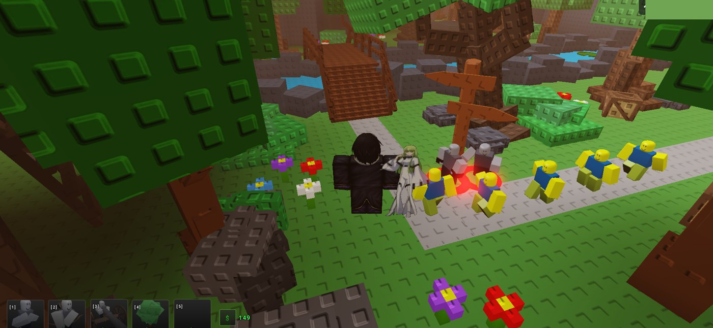
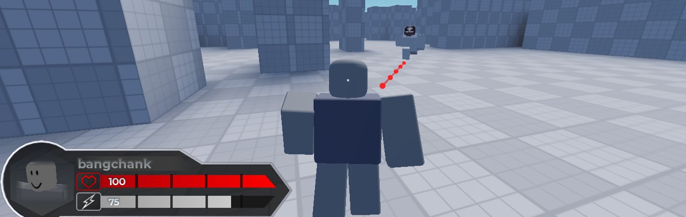
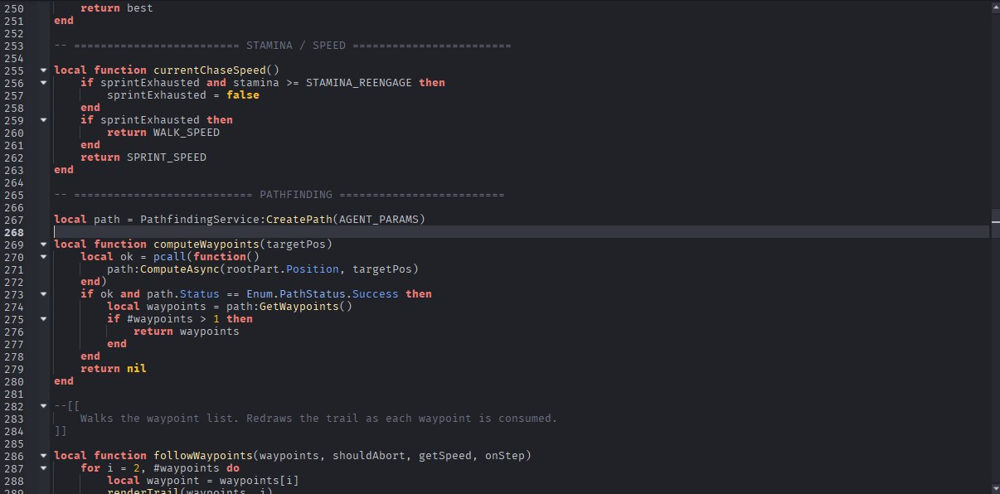

I'm Ben, a full stack advanced Roblox Luau scripter and VFX artist, willing to work part time and commissions.
Character controllers, enemy AI, matchmaking, saving and loading, UI, that kind of thing. I write it all myself instead of grabbing something off the toolbox, I keep the important checks on the server, and I make sure it still runs fine on a cheap phone. Scripting is my primary skill and it's what you're hiring me for. VFX is my secondary one, so I can take an ability from the toggle to the finished effect without handing it off to anyone.
The two games further down are my own projects, so whatever I write for you is the same kind of code I have to deal with myself later on. I mostly do short commissions. One system, one feature, an optimization pass, or a bug you're just done dealing with.
Frieren cutscene. She casts up into the sky, a ring opens on the ground and flowers spread out over the whole field. The whole thing is mine, the cutscene and camera scripting, the VFX, the character animation, the map and the lighting.
VFX
Animation
Ultimate ability showcase.ALL SCRIPTING AND VFX IS DONE BY ME. I wrote the camera work, the cutscene framing with the bars, the orbit and the pull back on the cast, and the ability toggle that drives the whole sequence and hands off to each stage of the effect. The VFX is mine too, that's the secondary skill, built as a real instance tree.
Scripting
VFX
Tower defense boss fight. The Noob King wave from my tower defense game, running on a phone. The boss has its own health bar and state label, and the panel on the left is the unit upgrade and targeting menu for whatever you have placed. The whole system is mine, the UI, the VFX, the unit models and all of the scripting.
Scripting
VFX
Combat abilities. This is a spin attack with a slash ring around the character and then a ground slam that kicks up a bunch of dust. Just a test rig in Studio, there's no art on it yet.
Scripting
Parry. When the striker swings there's a red wind up first, and if you block right at that moment it becomes a parry instead of a normal block. You get the impact burst and the deflect effect and you don't lose any health, the bar stays at 125 through the whole thing.
Scripting
Military backpack inventory. This one was a commission, I built it inside the client's own place. You press TAB and the backpack rig comes up in front of the camera, and the items are actual 3D objects sitting in it, each slot has its own take out prompt. It runs alongside a first person viewmodel and a hotbar.
Scripting
Wire box objective. The prompt checks the objective's own state before it does anything. When you interact it opens a little splice minigame where you reroute wires between terminals. When you finish, the server logs it and it counts toward the round's win condition.
Scripting
Generator objective. A hold interaction with a timing ring and a progress bar that has four stages. Each stage saves separately, so if a survivor gets interrupted halfway through a repair they don't lose what they already did.
Scripting
Server terminal objective. You pick up data chips around the map and then hold them over the scanner on the console. Every symbol decrypts into a number and the panel keeps track of the system status until the terminal is back up. The chip pickups, the hold and the decryption all happen on the server.
Scripting
Movement and camera in the actual map. The custom controller and the soft shift lock camera running in the real built map instead of a test room. You can see the health and stamina HUD going down as you sprint.
A full tower defense game I made by myself. Code, UI, enemy behaviour, economy, balance, mobile support, all of it. It's live right now, which is honestly the main reason it's on here, you can go play it and check everything below yourself.

The unit shop, each unit has its own hexagonal stat radar. All custom UI, no plugins.

A wave in progress, you can see the placed units, the enemy path and the economy HUD.
Hexagonal stat radarIt reads each unit's stat table and draws the polygon, the axis web and the letter grades at runtime. I built it out of primitives instead of using a charting module, so when I add a new unit I don't have to touch the UI at all.
Wave and enemy directorThe waves scale up in what they're made of as you go, the enemies have different movement behaviours, and the multi-phase bosses switch up their attack patterns in the middle of the fight.
Tower placementValidation that makes sure the preview and the placement you actually commit are always the same thing. Works the same with mouse and with touch.
Economy and support unitsIncome towers and payouts per wave, with some anti-snowball levers in there so a really strong early game doesn't make the rest of the run boring.
Loadout systemEquip, unequip and reorder. Including the sparse array stuff that silently breaks Lua table iteration if you're not careful about it.
Responsive UI and performanceLayouts that hold up on a small phone and on widescreen, animations split between client and server, and the per frame loops merged down into as few as possible.
Unannounced Asymmetric Horror Project
An asymmetric horror game, 12 survivors against 2 strikers, on two maps, sort of in the style of Dead by Daylight. I can't say the name until we announce it. I'm the only programmer on it, my partner does the design and the map layouts.

The striker mid chase. The red trail is the computed path getting used up one waypoint at a time.

Chase speed is tied to stamina, with an exhaustion threshold and a re-engage threshold, and the pathfinding fails safe if it can't find a route.
Custom character controllerMovement written from the ground up because I didn't want the default humanoid feel. Sprint, crouch and the state transitions, with weight based animation crossfading.
Soft shift-lock cameraA custom camera rig set up for over the shoulder horror framing. The easing keeps your aim responsive but it doesn't have that stiff feel the stock shift lock has.
Striker AIPathfindingService routing that recomputes when a path fails, and it all runs off a stamina model. When the striker gets exhausted it drops to walk speed, and a re-engage threshold decides when it starts chasing again.
Objectives and interactionProximity prompts where every objective keeps its own state, and they feed into the round's win conditions.
Server-authoritative movementWalk speed, position and player state all get validated on the server. That closes the client trust holes exploiters use to outrun you or clip through the map.
what I build
Data & savingDataStores and ProfileService. Save structures, session locking, and migrating old player data over without wiping anyone's stuff.
Matchmaking & roundsQueues, putting people on teams, the whole round lifecycle, and working out who won.
Character & cameraCustom controllers, sprint / crouch / stamina states, animation blending, custom camera rigs.
Enemy & NPC AIPathfindingService routing, waypoint following, chase and search state machines, multi-phase bosses.
UI from scratchHUDs, shops, upgrade panels, stat displays that read from data, and layouts that don't fall apart on a small phone.
VFX secondary skillAbility and cutscene effects, beams, trails, particle bursts and screen framing, built as a real instance tree. Everything above this line is the scripting, that's the primary skill, this one just means I don't have to wait on a VFX artist to finish an ability.
Performance & securityFiguring out what's eating your frame rate, moving work off the server, and validating remotes so exploiters can't just ask the server for stuff.
ScopeYou tell me the system or the bug. I ask the questions that actually change the estimate, and then I write down what's included and what isn't so we're on the same page.
EstimateYou get a fixed deliverable and a real timeline before I start anything. If the job grows halfway through we re-quote it, I'm not going to quietly go over and then surprise you with it.
BuildI send updates that have something you can actually test in them, not a week of nothing and then a giant wall of code.
HandoffCommented, modular code that drops straight into your place, a quick walkthrough of how it all fits together, and a window after that where I fix anything that comes up.
working together
Availability (Eastern)Thu and Fri 6 to 8 PM, Sat and Sun 3 to 10 PM. That's around 25 hours a week. I'd rather be upfront about that than pretend I can do full time.
Best fitOne system, a feature, an optimization pass, closing exploit holes, or hunting down a bug. Usually a few days to a few weeks of work.
RatesI quote per project once we've agreed on the scope. Tell me what you need and I'll come back to you with a number and a date.
ReferencesCrit (critical_dummy) and Pearl (pearlsnivy1) are happy to vouch for me. I can give you more if you want.
connect
Send me the game, what the problem is and when you need it by. If I'm not the right person for it I'll tell you straight up instead of wasting your week.